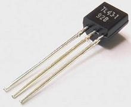
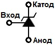
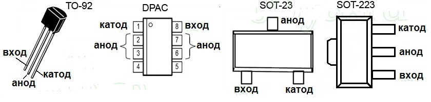

Управляемый стабилитрон TL431
TL431 представляет собой регулируемый стабилизатор напряжения параллельного типа (интегральный аналог стабилитрона) и предназначен для использования в качестве ИОН и регулируемого стабилитрона с гарантированной термостабильностью по сравнению с применяемым коммерческим температурным диапазоном. Аналогами этой микросхемы являются - КА431, и отечественные микросхемы КР142ЕН19А, К1156ЕР5х. TL431 устанавливалась в большинство блоков питания компьютеров, ноутбуков, телевизоров, видео-аудио техники и другой бытовой электроники.


Рис. 1 - Внешний вид и условное графическое обозначение стабилитрона TL431

Рис. 2 - Цоколёвка TL431.
Таблица 1
| Параметр | Значение |
|---|---|
| Входное (опорное) напряжение, В | 2,495 |
| Выходное напряжение, В | 2,495 ... 36 |
| Входной ток, мкА | 1,8 |
| Динамическое сопротивление, Ом | 0,22 |
| Рабочий ток, мА | 1 ... 100 |
| Отклонение точности установленного выходного напряжения, % | 1 ... 2 |
| Мощность, Вт | 0,2 |